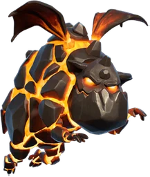

Lava Hound — Clash of Clans
Updated: 26 August 2026 · By the Goblins Farm team
The Lava Hound is the air equivalent of the Golem, with one crucial difference: it specifically targets Air Defences. It deals almost no damage, absorbs an enormous amount, and bursts into Lava Pups when destroyed.
- Housing space
- 30
- Levels
- 8
- Trained in
- Dark Barracks
- Targets
- Ground only
- Attack speed
- 2s
- Range
- Melee
What it does
It prefers Air Defences, flies slowly, has very high hitpoints and negligible damage output. When destroyed it splits into Lava Pups, small fast air units that continue attacking.
Because it seeks Air Defences specifically, it flies directly at the buildings that threaten the rest of your air army, which is precisely the job you want a tank to do.
How to use it
The classic lavaloon composition pairs Lava Hounds with Balloons: the Hounds absorb Air Defence fire, the Balloons destroy the defences.
- Send Hounds first, several seconds ahead, on the side you intend to attack.
- Follow with Balloons or Minions once the Air Defences are committed to shooting the Hounds.
- Do not rely on Hound damage. They are a shield, not a weapon. If your army has no damage behind them, nothing dies.
How to beat it
Air-targeting splash, and Air Defences spread widely enough that a Hound cannot cover them all. Since the Hound itself deals almost no damage, killing it is less urgent than killing what follows it, so defences that damage the whole air group are worth more than ones that focus the tank.
Stats by level
| Level | Hitpoints | DPS | Research cost | Research time | Town Hall |
|---|---|---|---|---|---|
| 1 | 6,100 | 10 | — | — | 9 |
| 2 | 6,500 | 12 | 14,000 Dark Elixir | 2 d | 9 |
| 3 | 6,800 | 14 | 21,500 Dark Elixir | 2 d 12 h | 10 |
| 4 | 7,200 | 16 | 42,500 Dark Elixir | 3 d | 11 |
| 5 | 7,600 | 18 | 60,000 Dark Elixir | 4 d | 12 |
| 6 | 8,000 | 20 | 80,000 Dark Elixir | 7 d | 13 |
| 7 | 8,500 | 22 | 200,000 Dark Elixir | 8 d | 16 |
| 8 | 9,500 | 24 | 345,000 Dark Elixir | 15 d 6 h | 18 |

Where these numbers come from. Read from Clash of Clans' own game files, client build 18.400.21. They are exact for that build and do not reflect anything released after it, so verify in game before committing an upgrade.
Game values are read from Supercell's own game files, reproduced as fan content under Supercell's Fan Content Policy. Goblins Farm is not affiliated with, endorsed, sponsored, or specifically approved by Supercell, and Supercell is not responsible for it.
 Frequently asked
Frequently asked
What does the Lava Hound target?
Air Defences specifically. It flies past everything else to reach them, which makes it an ideal tank for an air army because it draws exactly the fire that would otherwise kill your Balloons and Minions.
What is a lavaloon attack?
An air army combining Lava Hounds and Balloons. The Hounds absorb Air Defence fire while the Balloons, which target defences, destroy them. It is one of the longest-standing and most reliable air compositions in the game.
 Keep reading
Keep reading
Goblins Farm is not affiliated with, endorsed by, sponsored by, or specifically approved by Supercell. Clash of Clans is a trademark of Supercell Oy. This material is unofficial fan content produced under Supercell's Fan Content Policy. Game values change with every update; always verify in-game before committing an upgrade.